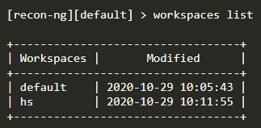
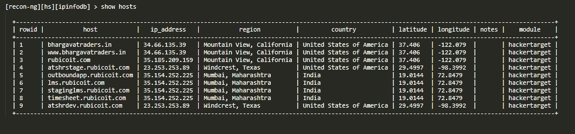

Basic tools
1. Recon-ng
one of the best reconnaissance tool.
Using worksapces

Using modules hakertarget and ipinfodb
result

We can see domain, subdomains with ip address, region, country location by earth coordinates ie latitudes and longitudes. using only domain name.